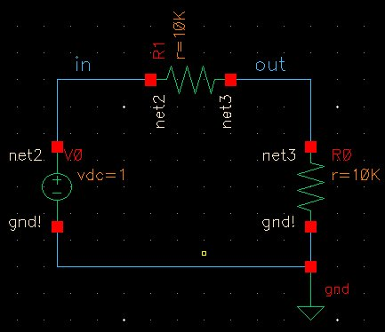
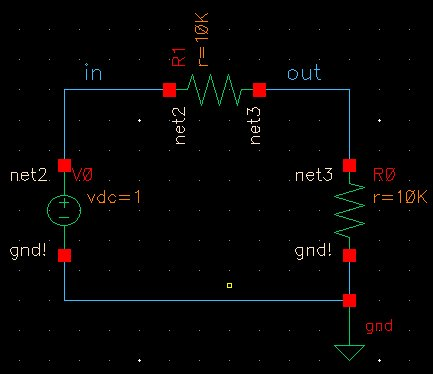

Lab 1 - EE 421L
Authored
by Martin Jaime,
September 6, 2016
Pre-lab work:
- The lab reports will be drafted using html and placed on CMOSedu.
- Prior
to the first day of lab, but no earlier than one week before the lab
starts, get a CMOSedu account, using your UNLV email address, from Dr.
Baker, rjacobbaker@gmail.com
- Review the material seen here covering editing webpages (do this before the first lab)
This lab will go through the first part of Tutorial 1 for Cadence seen here.
This lab focuses on interfacing with the Cadence software running on a
remote server through a command line interface with ssh using X11
forwarding.
The part that we cover in Tutorial 1 is setting up Cadence, laying out
a circuit schematic, and simulating it using Cadence's Spectre
simulation software.
Fortunately, I already had a working environment of Cadence.
ssh into the remote server with ssh -Y <username>@csimcluster.ee.unlv.edu. The -Y
flag is used to forward X11 graphics. This way, the user can interface
with the graphical user interface of Cadence. See the manual page for
ssh for more details.
In .bashrc, the following lines define environment variables for Cadence.
When modifying .bashrc, ensure to resource it by running source ~/.bashrc. In the CMOSedu directory, the cds.lib file has the following definitions.
We also set Spectre as the default simulator.
It also helps to set the background color to white when graphing
simulation results. Note that semicolons are used as comments. Anything
after the semicolon after the semicolon will be ignored.
Once the environment is set up to work with Cadence, start with virtuoso &. The ampersand is used to run Cadence in the background to maintain control of the command line.
Once all the windows are loaded, you will see the Command Interpreter Window (CIW) and the Library Manager window.
After creating a new Library for
Tutorial 1 and a new cell for the circuit, add two 10k resistors for a
voltage divider, a voltage source of 1 V, and a reference point (gnd). Wire up the circuit components by pressing the shortcut key 'w'.
After clicking the "check and save" button, the CIW will display the following.
After launching Spectre, set a transient analysis on one second, analyzing the input and the output of the circuit.
 

Always
ensure that simulation configurations are saved so that they can easily
be run again to avoid setting them up again by going to Session >
Save State and selecting Cellview. Loading a saved state can be easily
done with Session > Load State and selecting Cellview. Finally,
pressing the green "Netlist and Run button will run the simulation and
graph the results in a new Window.
Return to EE421L Labs